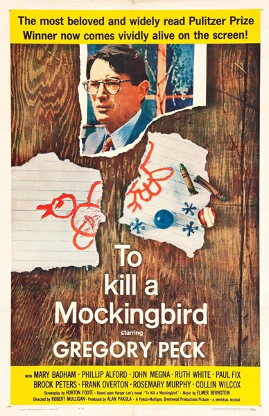

To Kill a Mockingbird
Starring: Gregory Peck, Mary Badham, Phillip Alford
Director: Robert Mulligan
Writer: Horton Foote
Producer: Robert Mulligan, Alan J. Pakula
Studio: Universal-International
To Kill a Mockingbird is a 1962 American legal drama crime film directed by Robert Mulligan and starring Gregory Peck and Mary Badham. Adapted from Harper Lee's 1960 Pulitzer Prize–winning novel To Kill a Mockingbird, the film follows lawyer Atticus Finch in Depression-era Alabama educating his children against the Jim Crow laws while defending a black man who is wrongfully indicted for the rape of a white woman.
Trivia
- Won the Academy Award for Best Actor.
- Won the Academy Award for Best Writing, Adapted Screenplay.
- Won the Academy Award for Best Art Direction, Black and White.
- Won the Golden Globe Award for Best Film Promoting International Understanding.
- Also nominated for: Academy Award for Best Supporting Actress; Academy Award for Best Director; Academy Award for Best Cinematography, Black-and-White; Academy Award for Best Picture; and 1 more.
- Based on To Kill a Mockingbird (novel by Harper Lee).
- James Stewart declined the role of Atticus Finch, concerned that the story was too controversial.
- Universal offered the role to Rock Hudson when the project was being first developed but producer Alan J. Pakula wanted a bigger star.
- Pakula remembered hearing from Peck when he was first approached with the role: "He called back immediately.
Filming Locations
- The accuracy of the recreated courthouse in Hollywood led many Alabamians to believe that the film was shot in Monroeville.
Previous Showings
6 Runs • 6 Festivals
14,646 tickets sold
All runs on record (6):
- June 19 - 23, 1998 · 2,047 ticketsDear Old Hollywoodw/ Night of the Hunter
- July 20 - 21, 2000 · 1,174 ticketsSummer 2000w/ On the Waterfront
- June 21 - 27, 2003 · 6,176 ticketsbob-hope-2003w/ Roman Holiday
- October 22 - 23, 2011 · 942 ticketsFall 2011w/ Black Legion
- July 18 - 21, 2015 · 2,576 ticketsSummer 2015 Forty Classics from the Golden Age Including Kurosawa in Augustw/ Witness for the Prosecution
- August 28 - 30, 2026 · 1,731 ticketsSummer 2026 including the Films of Marilyn Monroew/ The Kidnappers